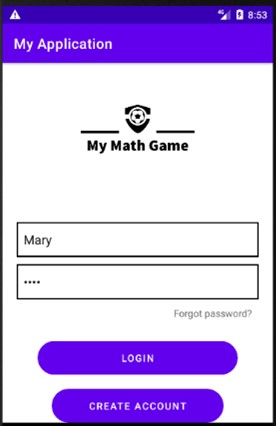

Projects

BerryLand Farm
A front-end website that uses HTML, CSS and Bootstrap to create a product webpage. I created this webpage to become knowledgeable in front-end technologies.
View Project

My Math Game
A mobile game application that uses kotlin to develop a math quiz. This project was created and completed in a group for my capstone course in college.
View Project